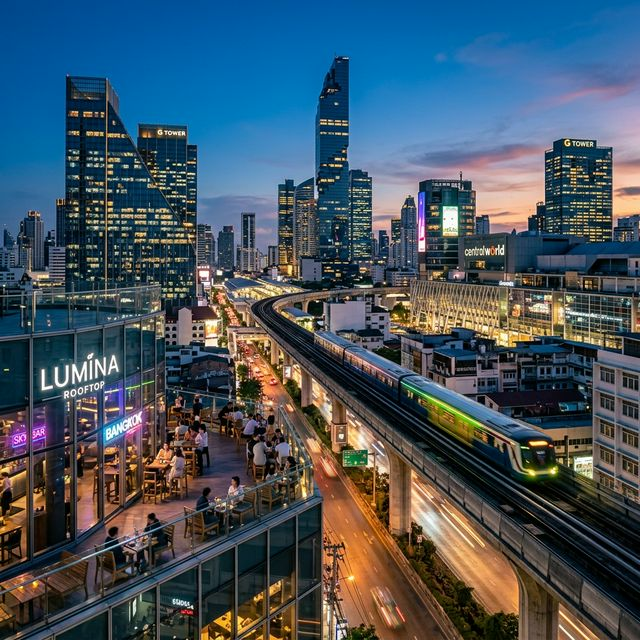
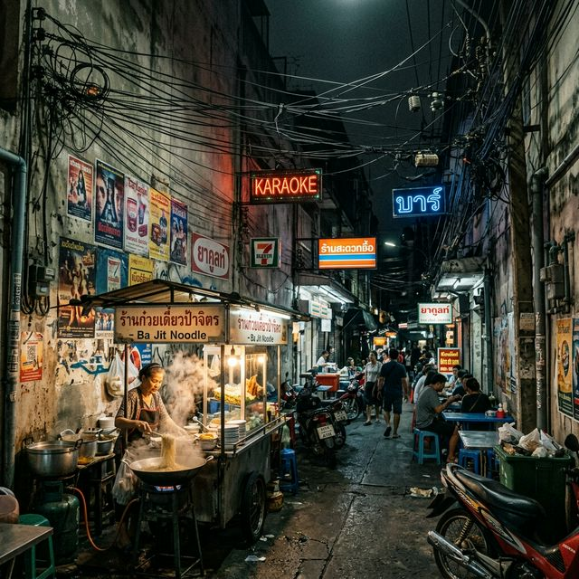
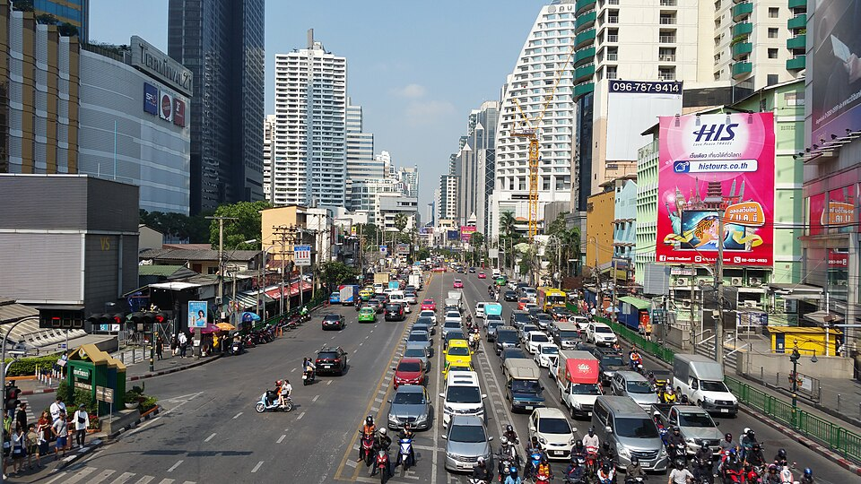
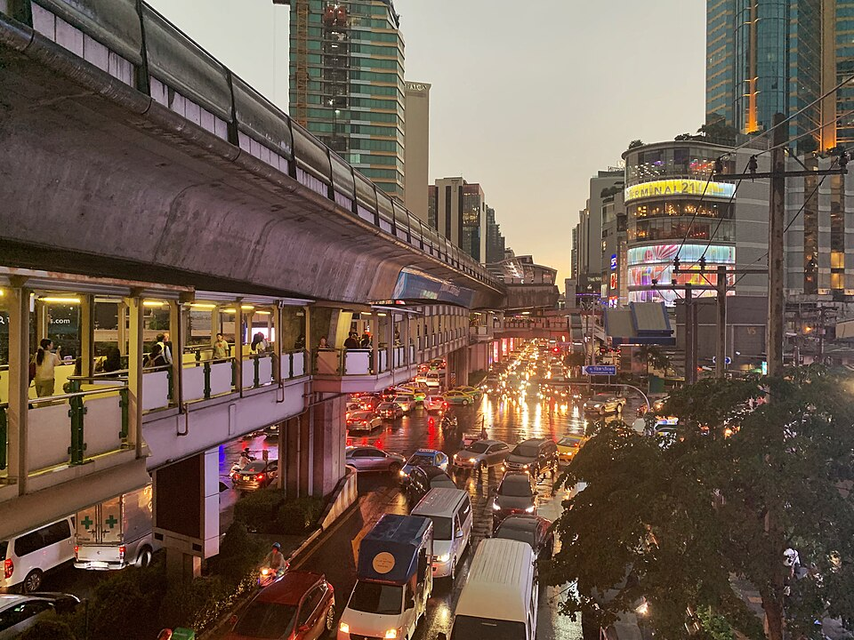
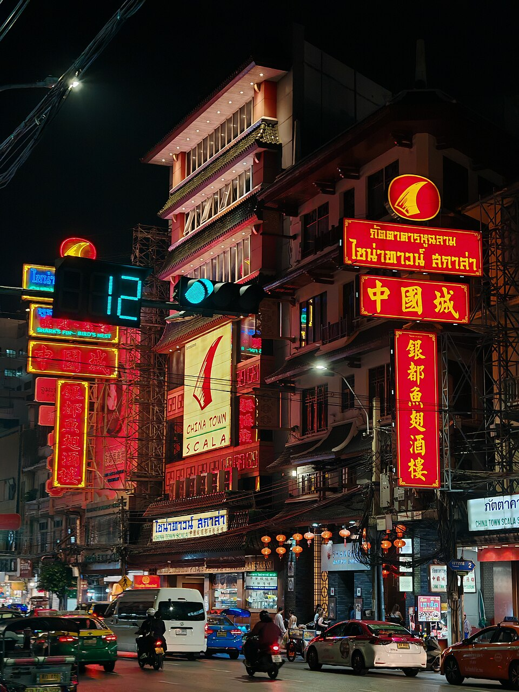
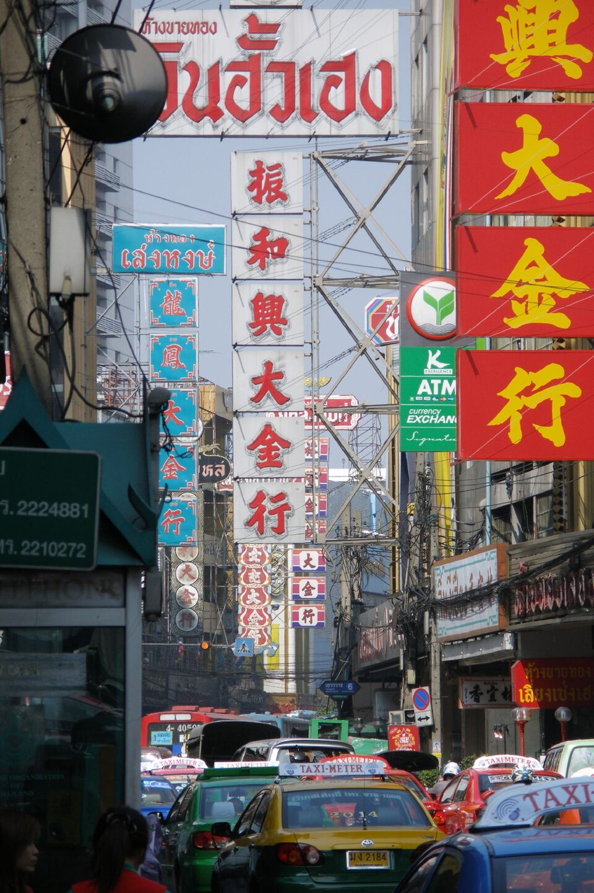

VERTICAL / GROUNDED
From facade to structure.


กรุงเทพฯ ถูกอ่านผ่านภาพลักษณ์ที่สวยงาม และโครงสร้างที่คอยซ่อนความวุ่นวายไว้ข้างหลังเสมอ






คาเฟ่สวย / ห้าง / Billboard / BTS / อาคารสูง
ซอยแคบ / สายไฟ / ร้านริมทาง / ถังขยะ / คนทำงาน / โครงสร้างที่ซ่อนอยู่
“Every beautiful front has a messy back.”
ทุกด้านหน้าที่สวยงามของกรุงเทพฯ มีด้านหลังที่วุ่นวายซ่อนอยู่